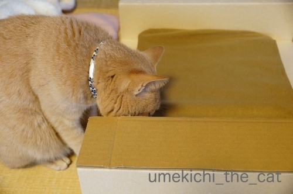
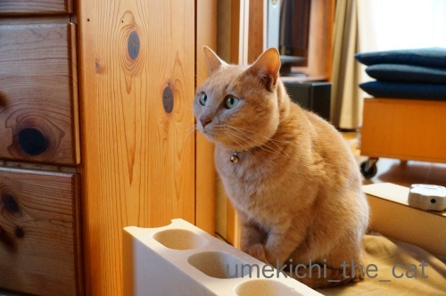
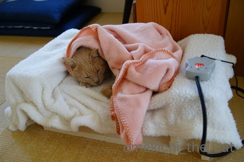
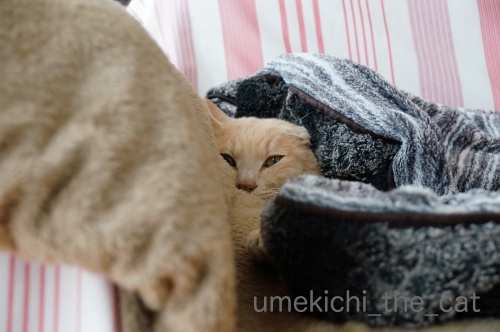

にゃん生初のホットカーペット [梅吉]
先日作った梅吉のベッドにホットカーペットを仕込んでみました。

ぬくぬくあったかいカーペットですよ。

肉球型のコントローラーですよ。
温度が５度刻みで上げ下げ出来るんですって。
私は電気毛布が苦手で（湯たんぽ派）
梅吉用にもこの手の製品を買うつもりはありませんでした。
が、新しいベッドにはサイズなどがぴったりのような気がして迷っていたら・・・
すでにおっとがポチっていましたよ(⌒-⌒;


各種セッティングして上に乗せてみるとちまっと落ち着きました
（この時は35℃設定）

朝ごはんを食べたらしばらくここで温まるのが日課になりましたよー！
（朝一番は40℃設定）
おとーさんのベッドに二度寝に行かなくなるというオチがw
おとーさんは嘆いてますが、にゃん生初のホットカーペット、梅吉には悪くないようです＾＾
取説には「獣医師がお勧めする適温は40℃」と書いてあるのですが
40℃になったところで触ってみたら結構熱い。
猫の体温に近い温度の様ですが低温やけども心配なので
ある程度あったまったら35℃に下げてます。
ホットカーペットをお持ちの方は設定温度をどうしてますか？
低・中・高の三段階切り替えだと中？

湯たんぽには湯たんぽの良さがあるようでこちらも引き続き使ってくださってます。

最低気温が５℃以下、最高気温が10℃以下だと途端に動かなくなりますよ。
あにゃたは変温動物ですかー。
そのうち冬眠するかも！？
自分の顔写真を元にアバターを作ることができるスマホアプリZEPETOで遊んでみました＾＾

出来たアバターがこちら。（コードは70YHGNです。）
若いのは私が盛った訳ではありませんよ。シワなどが反映されない素晴らしい忖度！
ほっぺたのあたりが似ているとのおっと談。
この私のアバター、ええかっこしいでスカした奴みたいなんですよねwww
（リュカさんのブログ参照）
リアルでもはっと思い当たることもあるような(⌒-⌒;
アバターはこんな風に遊べます。
梅吉と一緒に洗濯機に潜んでみる。
国立文楽劇場の舞台に立ってみる。
宝塚大劇場の舞台にも立つ！演目はベルばらですよ！！
あ、増えたw
marimoさんとリュカさんが遊びにきてくれました。
通天閣付近を案内しちゃいますよ。
さっ！串カツ食べに行こう♪

カフェオレ色の梅吉

梅吉 2023年8月10日 永眠


梅吉と出会った譲渡会

犬猫の理由なき殺処分ゼロ
妄想広告
UMEKICHI 光

爆発的に早い！
時々攻撃的！
Thanks to Mr.Boss365
爆発的に早い！
時々攻撃的！
Thanks to Mr.Boss365

ミニホカペは年寄り猫がいた頃使ってました。いつも低温です。中だと長時間乗ってた場合に暑すぎる感じでほんのり暖かいくらいで良いのだと思います。
ちぃさんのアバターかっこいいし色っぽい。この遊び面白いです~。
by zombiekong (2019-01-31 03:09)
我が家は私用に買ったホットマットをぶん盗られた物ですから
温度設定も人用で40℃超えてる（説明書では42℃）と思います。
でも問題なく使えてますね。
長い間足を置いてると熱く感じますけど
ニャンは平気みたいです。
やっぱり体温の差ですかね＾＾
by ぽちの輔 (2019-01-31 06:22)
梅吉さん、ポカポカ最高の場所いいにゃあ
by ニコニコファイト (2019-01-31 06:44)
梅吉さん♪ぬくぬく至福のお顔ですね♪
我が家はだいぶ昔にホットカーペットを使ってましたが
暑がりｓａｒａだったので
電源を入れることがありませんでした（笑
by きぃ (2019-01-31 07:56)
梅吉さん、とっても幸せそうなお顔ですねぇ=(^.^)=
うちはホッカペは使ってもらえないので
かみさん実家に嫁（？w）に行きました(⌒-⌒; )
我が家のニャンズの好み温度は風呂蓋の上と
かみさんの体温です♪( ´▽｀)
私は風呂以外お呼びでないみたいです(ｰ ｰ;)
by ニッキー (2019-01-31 08:31)
ホットカーペット、気に入ってもらえたようですねー(^｡^)
今の季節、あったかいのが一番！
ゼペットアバター、ついに登場しましたね。
なかなか色っぽいですよー(≧∀≦)
by よーちゃん (2019-01-31 09:03)
梅吉君、いたれりつくせりで
幸せそうだよーーー^^
ぬくぬくあたたかくて気持ちいいね♪
わたしも入りたい(笑)
ZEPETOでは、ちぃさんはスカしキャラってことで^m^
わたしはヘンキャラでいきますっ
by リュカ (2019-01-31 10:45)
寒い冬はヌクヌクが1番ですね。
私も寒いと動きたくありません（笑）
フカフカのベットでヌクヌクの梅吉さん、幸せ満開ですね。
ちぃさん、忖度するアバターで気分が上昇ですね。
初めてのコラボ洗濯機の中、二人とも緊張してますか（笑）
カッコいいポーズ（笑）がええ格好しいのスカしたちぃさんなのですね（笑）
そういえばリュカさんの変顔でもええ顔してましたね（笑）
by kiki (2019-01-31 11:29)
こんにちは。
先づは「小さいのでちぃさん」は失礼しました（涙）
どこでコメント見たのか？アブナイ・アブナイです（笑）
梅吉くん！！快適そうで良い感じです。毛布から覗いてる姿は、狙撃犯ですね？
ソファでゴロ寝ていると、すももが来ますが・・・
接触部が熱くて耐えられない時あります。体温が４０度も頷けます。
足元だとニャンズは良い湯たんぽ？になる感じです。
ZEPETO！！良い感じで合成できています。ちぃさん！！美人さんです。
表情が崩れないのが多少気になりますが・・・
アバター楽しそうです！！どこまで増殖するか？楽しみです！？(=^･ｪ･^=)
by Boss365 (2019-01-31 12:28)
猫ベッドの環境をよくしすぎると、下僕の膝やベッドに来なくなる・・・。
我が家でも床暖房とハンモックは大失敗ですよ(≧▽≦)
しか～し、梅吉さんのようにぬくぬく気持ちよさそうな顔が見れたらそれでいいかなと^^
床暖房の設定は10段階の４。下僕には寒いですが床にじっと座っているとけっこう暖かいので、こてつが低温やけどしないよう、下僕は厚着をしています。
ZEPETO、ちぃさんカッコイイ♪
できる女！って感じです(#^^#)
by ゆきち (2019-01-31 12:45)
ミニホカペ、昔の猫の時、使ってました。
吉は疑り深いから、なかなか新しいところに入ろうとしないので、。
猫の体温と一緒くらいの40℃は暑すぎて低温やけどしそうです。
毛布もかぶってくれるから、ほんわかぬるめがいいような。
ま、猫は熱かったら寝てくれないから、病気のコでなければ、
心配はないでしょうけど。
ZEPETOのアバター、かっこいいですね♪
by nachic (2019-01-31 13:28)
肉球型のコントローラー、可愛いね～♪ポイント高い！
ペット用のホカペ。家は具合の悪い子以外はほとんど使われることがなく仕舞われっぱなしです。
使ってた時はほぼ低だったかな？
普段はやっぱりお膝に乗っていたいみたい。
起きてるときも寝る時もみんな私の体温で暖を取っています(^-^;
梅吉くんは一人ですやすや。自立しているのかっ？！
・・・ここまで至れり尽くせりのぬくぬく包まり状態。
極楽極楽って言ってそうｗ
ZEPETO楽しそうです。元気はつらつだね～(≧▽≦)
by emi (2019-01-31 16:51)
梅吉さん、幸せ一杯のお顔で良いですね(^^)
また、肉球コントローラーも最高です。
うちの猫は健在の時、よく布団の中に入ってきましたが、やっぱりぬくぬくの場所は至福なんですね(^_^)v
by kou (2019-01-31 19:27)
梅吉さんホカペで冬眠状態？？？
うちのもヒープレでぬくぬく冬眠状態です。
ヒープレは温度調節できないタイプなので、
上に厚めのクッションをかけて温度を和らげてます。
アバター楽しそうですね。
梅吉さんのほうが大きい！^^)
by yes_hama (2019-01-31 21:39)
今日は梅吉さんには申し訳ないですが、ちぃさんのほうが。
私のイメージしていた通りの御姿です。
綺麗！
踊れるんですね。
ごめんなさいね梅吉さん＾＾
by riverwalk (2019-01-31 23:08)
祝？ホカペ導入♪^^
ねこさま専用グッズなんですかね（にくきゅうコントローラー・・・）
埋もれてぬくぬく、幸せそうです。
しかし、旦那様はちょっぴり寂しいですね^^;
ZEPETO？写真からって面白いですね。
アバターちぃさん、ポージングもエモいです（*´∀｀*）
これってもちろん・・・にんげんだけですよね？（笑）
by Ja-Kou66 (2019-02-01 00:29)
ホカホカで梅吉さんも嬉しそう^ ^
by ryang (2019-02-01 00:52)
おはようございます！
梅吉さん専用のホッカペいいですね。
我が家は人用のホッカペですが温度は低～中くらいで使用してます。
低温やけど、脱水に注意ですね。
by yhiga-siura (2019-02-01 07:40)
梅吉さん、ホットカーペットに顔を付けてチェックしていますね！
黒川温泉は硫黄の良い感じの温泉でした(^^)
大風呂に3回、貸切り風呂に2回入っちゃいました(笑)
by ma2ma2 (2019-02-01 09:48)
ホットカーペット気に入ってますね～(^^
うちにかつてあったホカペは人間用？だったのか温度調節はレバーで
スライドするタイプでした。40度って結構熱いですよね。
寒い毎日ですがうちのニャンズは人間ベッドの羽毛布団で暖をとっている
ようです。猫なりの知恵ですね～(笑
ZEPETOさん、おお～宝塚の舞台にデビューできるとは夢にも思わなかった(笑
そして通天閣・・・新世界も行ったことがありませんでしたので、ラッキー♪
仲間も増殖中で賑やかになってまいりましたよ(*>艸<)
by marimo (2019-02-01 10:43)
適温が40度。結構高めなのですね。たぶんうちはもっと低く設定してます（上に電気を入れてないこたつを置いていますが）旦那さんの布団で朝のぬくぬくタイムなくなっちゃったのですね。やはりホットカーペット強いですね(^_^;)
by palpal (2019-02-01 14:29)
コントローラーも可愛いし、５度きざみに設定できるのも
優れモノですね！＾＾
猫は40度が適温なんですね。
うちは、夜は一晩中、人間のホットカーペットを
かなり弱くつけっぱなしにして、
その上に電気を消したコタツをおいて、
コタツの中に、毛布を「厚く～薄く」差をつけて敷いています。
あかりはその中で寝ていますよ～( ´∀｀ )
by マーヤ (2019-02-02 00:10)
梅吉さんのぬくぬくライフ、気持ちよさそうだなぁ♡
ウチは、猫用にはあったかグッズはないのですが、
電気ヒーターを点けると、みんなゾロゾロ集まるので、
やっぱり、あったかモノは好きなんだろうなぁ(^_^;
･･･ZEPETOのことが、さっぱり分からん。。あっ、スマホぢゃないからね〜
by のらん (2019-02-02 11:26)
肉球型のコントローラーがいいな～（ﾟ□ﾟ）
by 英ちゃん (2019-02-02 14:36)
ちぃさん こんばんは
ぬくぬくカーペットは気に入ったようですね。
毛布をかぶった姿が可愛いです。
by SORI (2019-02-02 18:52)
ZEPETO仲間！増殖中ですね＾＾
by てんてん (2019-02-02 23:13)
肉球型のコントローラーとは♪
すでにおっとさんがポチっていたなんて、愛情あふれるご家庭ですね＾＾
梅吉さん、満足そうに使ってくれて＾＾
うちはホカペは使わなかったかなあ‥湯たんぽにもより着かなかったから。
傍に来なくなる、のも理由の一つかも＾＾；
ZEPETOかっこいいポーズ！楽しそうですねえ＾＾
by sana (2019-02-02 23:57)
はじめまして。お名前はあちこちで拝見していたのですが(^^;;
リュカさんところでZEPETOご一緒させていただいております。
フォローさせてもらいました♪ よろしくお願いしまーす。
by ChatBleu (2019-02-03 15:38)
まだチケット購入してなかったので、さきほどイープラスで舞台のチケット探すが、これだ！というのがなく、スポーツ観戦に変更すると、バレーボールと卓球ゲット？？まだコンビニに行ってませんが、火曜の21時までゲットします。
by ニコニコファイト (2019-02-03 17:56)
zombiekongさん＞
ミニホカペ＝年寄り猫＆病気の子・・・
うちは（今年の4月で）４ちゃいなのに甘やかしすぎかしらー(⌒-⌒;
アドバイスをいただいて温度は30℃に設定しましたm(_ _)m
確かにほんのりで良いんですよね！
取説の指示通りに設定しているわん・にゃんさんが心配です。
アバターは出来過ぎなんですよー(*>艸<)
実際お目にかかった時に「ぜんっぜん違うじゃない！」という
苦情は受け付けませんのでよろしくwww
ぽちの輔さん＞
キジトラ軍団さんは人間用をお使いなんですね！
ぶん盗られちゃったぽちの輔さんが
寒い思いをしてるんじゃないかと思うと不憫でなりません(*>艸<)
40℃越え、結構高めの設定ですね！
みなにゃんが上になったり下になったりで
満遍なく温められる感じでしょうか＾＾
ニコニコファイトさん＞
また一つポカポカの場所が出来ました＾＾
おかげで冷える朝には本気で動かなくなっちゃいました(⌒-⌒;
バレーボールに卓球、未知の世界です！
レポ楽しみにしています＾＾
きぃさん＞
きぃさんちはアルミプレートの方が活躍ですものね！
お腹を冷やしちゃったりしません様にーm(_ _)m
って流石に今時期は乗ってないですよね。
ニッキーさん＞
あはは＾＾加湿器といいホッカペといい
良いものがどんどんやってくるご実家、羨ましいです！
うちはお膝は広さもあるのか断然おっとの方へ。
じつはおっとは平熱が高い人なのでそのせいもあるのかな？
もしかしたらニッキーさんよりゴッドマザー様の方が体温が高めですか？
あ、でも真相を確かめない方が良いかもしれませんね・・・(⌒-⌒;
よーちゃん＞
気に入りすぎて寒い朝なんてホッカペ入りベッドから
出てこなくなりましたよw
アバター、やけに若可愛くて恐縮です(-_-メ)
リアルはもう色褪せ気味のおばちゃんですのでよろしく〜www
リュカさん＞
ぬくぬくしていると一緒に入りたくなるよね・・・
ふふふ(ΦωΦ)我が家では冷たい手を入れて
梅吉に嫌がらせをするのが流行ってますw
あんまり幸せそうな顔してるのでついつい(⌒-⌒;
ZEPETO、アバリュカさんの変顔は天下一品だよぉー0(≧▽≦)0
今後も期待してますw
kikiさん＞
あら＾＾動きたくない、動けない？梅吉と同じですねー(*>艸<)
もっとも私も動きたくないのですが
早朝梅吉に体の上を繰り返し横断されて（起きろ！アピールw）
動かざるを得ません(-_-メ)
ZEPETO、kikiさんもいかがですか？というかご主人が喜びそうな気がします。
二人でスカしたキメ顔ショットも楽しいですよー（笑）
Boss365さん＞
ふふふ。どこだったかしら＾＾コメント見かけましたよ(*>艸<)
にゃんこは体温高いですよね！
真冬は良いですが春先に布団に入ってこられると
暑くて目が覚めちゃいますw
梅吉も暑くなってずるずる〜っと出ていくし。
足元の湯たんぽ状態は快適ですが梅吉は足の指が好きなので（笑）
がぶ〜っとされて油断できませんwww
ZEPETO、Bossさんもいかがですか？
私のアバターはだいぶ出来が良いです！！
お目にかかることがあっても「全然違うよ！」
という苦情はお受けできませんのでよろしくお願いしますm(_ _)m
ゆきちさん＞
そうそう！猫様の幸せそうな様子を見て満足半分
自分のところに来なくなってしまった寂しさ半分・・・ですよね(⌒-⌒;
梅吉は床暖には反応しないのですが
このホカペにはご満足いただけた様です0(≧▽≦)0
設定温度は皆様のコメントにしたがって
「冷やっとしないくらいうっすら暖かい程度」にしました！
ZEPETOアバター、本人はデキる女でもなんでもないのですが・・・
願望が反映された！？(*>艸<)
nachicさん＞
吉くんは慎重派ですね！
ホカペの設定温度はみなさまの助言に従って
じんわり暖かい程度にしました＾＾
お部屋の中が寒いわけじゃないし・・・ね。
ZEPETOのアバターは出来過ぎでーす(⌒-⌒;
ま、遊びなのでこういう私になって楽しもうと思ってます♪
emiさん＞
ホカペは高齢の子、具合の悪い子
に使っている（使っていた）方が多いのですね。うち、過保護すぎ？w
梅吉はお膝お布団の中大好きだけどある程度時間が経ったら
出ていちゃうのよね・・・
一人の時間も欲しい、みたいな(*>艸<)
極楽〜は絶対言ってると思います！
これだけ尽くしてるんだから言ってくれないと傷ついちゃうわ〜(⌒-⌒;
ZEPETO、これから一緒に遊びましょうね♪
kouさん＞
暖かいと本当に幸せそうな顔しますよね＾＾
最近このベッドに入り浸りで多少つまらなくはありますが
喜んでくれているので良し、ですw
yes_hamaさん＞
先輩アズ氏に学んだのか冬眠しようとしているのかもしれません(*>艸<)
温度調節、なるほど！
タオル等挟むのも手かもしれませんね＾＾
アバターなら梅吉のお腹の上でお昼寝するのも可能です♪
riverwalさん＞
あら〜・・・アバター好評でうれしはずかし、とまどっちゃうですw
年齢が全く反映されてないので
アバターが思いっきりおばちゃんになったのが今の姿でーす(⌒-⌒;
Ja-Kou66さん＞
おっとは手放しでは喜べないかもしれませんが
梅吉が満足しているので祝ホカペ導入です＾＾
私は注文に関わってなかったので（色は聞かれましたけど）
肉球コントローラーがきてびっくりしました(⌒-⌒;
なんかにゃんこに染まってますよねwww
ZEPETO、残念ながら猫の顔は受け付けないんですよね・・・
私も真っ先に梅吉のアバター作ろうとしましたが
ダメでした (-_-メ)
ryangさん＞
寒い冬はやっぱりホカホカが一番ですよね！
一度でいいから灯油ストーブの暖かさを
体験させてあげたい・・・
yhiga-siuraさん＞
梅吉初のホッカペ、とっても気に入ってくれました＾＾
みなさん設定温度は弱めなんですね！
アドバイスをいただいて30℃設定のうえ
一枚ブランケットを挟んで座らせております。
なるほど！温めると脱水も要注意ですね。
そばに白湯を置く様にしますm(_ _)m
ma2ma2さん＞
黒川温泉楽しまれた様ですね！
計５回、十分元が取れましたね＾＾でも湯あたり要注意！？(*>艸<)
marimoさん＞
ホットカーペット、思った以上に気に入ってくれました＾＾
設定温度は皆様からのアドバイスを参考に30℃にしました。
冷やっこくないくらいで丁度良いんですよね。
電気製品はショートも怖いのでホカペは人間がいるとき限定です。
うちはお布団に一人で潜り込むことはしない子なので
人がいないときは湯たんぽにくっついている様です。
ZEPETOはそのうちポール・マッカートニーと共演する予定ですよ(≧▽≦)
palpalさん＞
設定温度、皆さんのアドバイスを見てひんやりしてきゃいいんだなって。
部屋が寒いわけじゃないからそれで十分なんですね！
朝のぬくぬくタイム、どーゆーわけだか週末限定で復活中w
おっと大喜び(≧▽≦)
マーヤさん＞
肉球コントローラー、私は届くまで知らなかったので
開けてみてびっくりでした。
おっとの趣味！？(*>艸<)
あかりちゃんはストーブで背中炙りもできるし
夜は快適なぬくぬくコタツでおやすみ、と至れり尽くせりですね(^_－)☆
のらんさん＞
電気ヒーターにゾロゾロ群がるの図、も
たまらないですねー＾＾
ふだんは猫団子で暖をとり合っていらっしゃるのかな。
ZEPETO、もうしばらくブームは続きそうなので
呆れながら生暖かい目でご覧いただけると嬉しゅうございます(*>艸<)
英ちゃんさん＞
肉球型、可愛いでしょー0(≧▽≦)0
届いたらこれでちょっとびっくりwww
SORIさん＞
ぬくぬくカーペット、思ったよりも気に入ってくれました＾＾
毛布は包まれるのが好きなんですよねー。
寝返り打って毛布がはだけるとじーっと視線を送ってきて
「くるんでや」と言われますw
てんてんさん＞
はい＾＾増殖しております！
てんてんさんのコードは秘密なのかしら？
sanaさん＞
梅吉には甘いのです・・・(⌒-⌒;
sanaさんのところはsanaさんのぬくもりが一番で
それでひたひたに満たされていたのですね＾＾
おっとの嘆きは、週末限定で梅吉がベッドに行く様になったので
解消された様です！よかったよかった。
ZEPETO、見ている方はなんじゃ？かもしれませんが
やっていると楽しいのですw
もう少しおつきあいくださいませm(_ _)m
ChatBleuさん＞
コメントありがとうございます＾＾
ZEPETOで繋がるも楽しいですよね♪
ChatBleuさんとのツーショットは
今週木曜日の更新でお披露目させてくださいね(≧▽≦)
色々と秘策を練っております(*>艸<)
by ちぃ (2019-02-03 19:44)